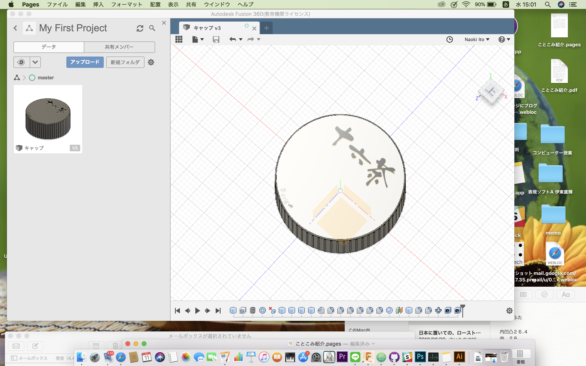
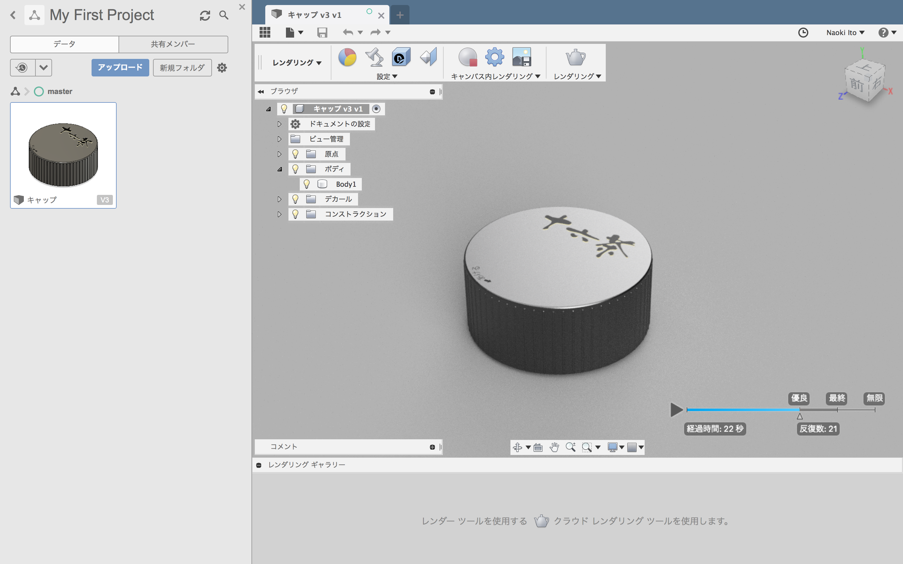
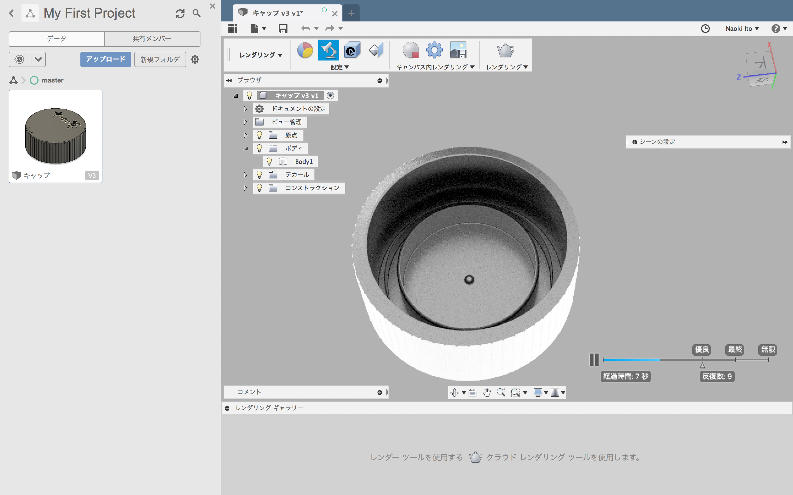
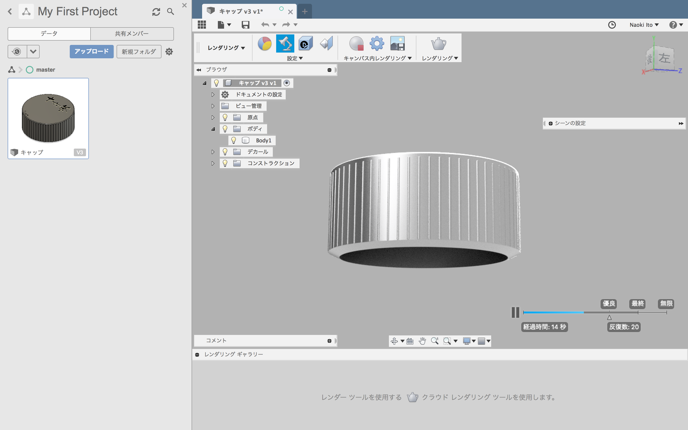
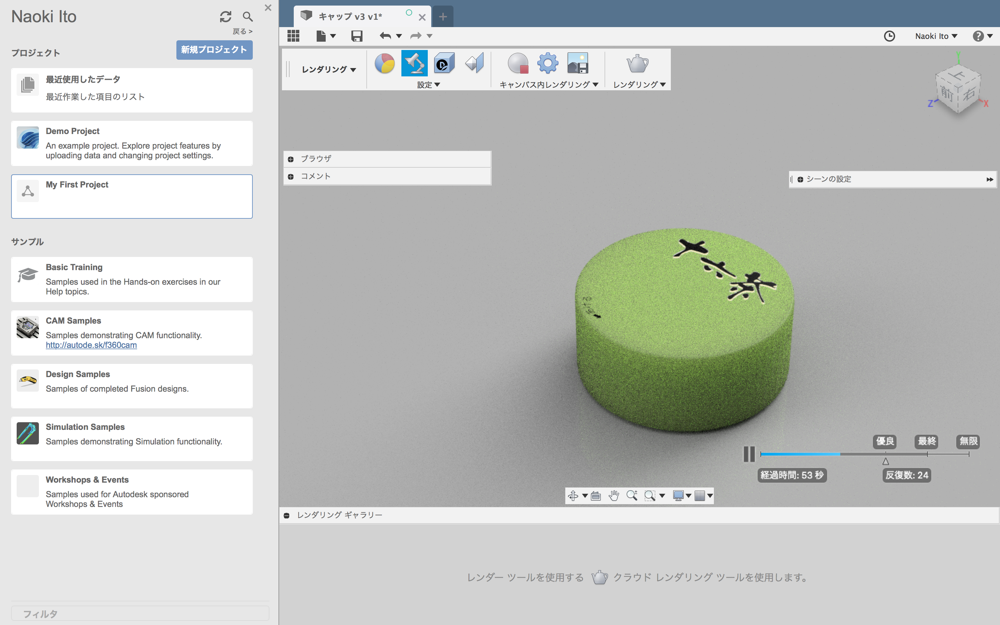

【第三回】製造工程研究<
「製造工程研究」
3rd Sprint: 2018/7/5(thu)~7/11(wed)
1日目：7/5(木)3,4講時
課題説明
映画観賞
クリス アンダーソン TED
2日目：6/20(水)1-4講時
レビュー（前回課題）
計測機器の使い方
Fusion360ことはじめ
計測器を使いながら、ペットボトルの蓋を製作。
小さいためか測りづらかったが何とか完成。
CADデータ画像
    
3日目：
補講：8/1(水)1-4講時
10:30~ レビュー（全員） 3min/person
13:30~ リモートトーク
菅沼聖 (YCAM Educator)
YCAMとは？
YCAM公式（山口芸術センター）
未来の運動会
今年開催の渋谷企画
コロガル公園コモンズ
など
14:00~ 作業時間
Nintendo Labo 開発
任天堂ラボコンテスト2018
18:00終了予定
【第二回】加工工程実践（デジタルファブリケーション）
Software&Network Home
Home